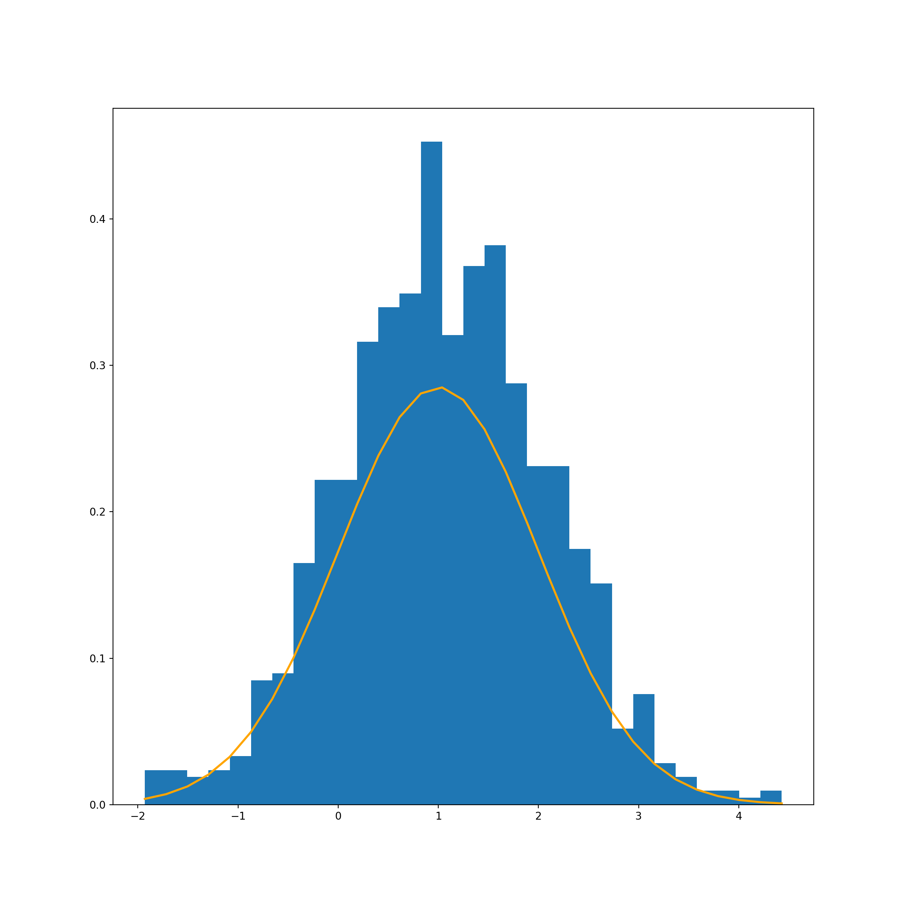

Chapter 3 Hypothesis testing
3.1 Importing a new module
## *Should not be needed*
# Use conda install *package_name* to install a new module (in terminal)
# Use reticulate::py_install("package_name") to load in that specific package to the R Studio environment
# Then use import "package_name" to import the package into the relevant chunk3.2 Importing python packages
import matplotlib.pyplot as plt
import matplotlib.dates as mdates
import pandas as pd
import numpy as np
import statistics
import statsmodels.api as sm
from scipy.stats import norm
from matplotlib.ticker import EngFormatter, StrMethodFormatter3.3 Correlation
Pearson’s Correlation Coefficient Tests whether two samples have a linear relationship.
Assumptions
Observations in each sample are independent and identically distributed (iid).
Observations in each sample are normally distributed.
Observations in each sample have the same variance.
Interpretation
H0: the two samples are independent.
H1: there is a dependency between the samples.
# Example of the Pearson's Correlation test
from scipy.stats import pearsonr
data1 = [0.873, 2.817, 0.121, -0.945, -0.055, -1.436, 0.360, -1.478, -1.637, -1.869]
data2 = [0.353, 3.517, 0.125, -7.545, -0.555, -1.536, 3.350, -1.578, -3.537, -1.579]
# Run the test
stat, p = pearsonr(data1, data2)
print('stat=%.3f, p=%.3f' % (stat, p))## stat=0.688, p=0.028if p > 0.05:
print('Datasets are not correlated')
else:
print('Datasets are correlated')## Datasets are correlated3.4 Stationary tests
Augmented Dickey-Fuller Unit Root Test: This tests whether a time series has a unit root, e.g. has a trend or more generally is autoregressive.
Assumptions
- Observations in are temporally ordered.
Interpretation
H0: a unit root is present (series is non-stationary).
H1: a unit root is not present (series is stationary).
# Example of the Augmented Dickey-Fuller unit root test
from statsmodels.tsa.stattools import adfuller
data = [0, 1, 2, 3, 4, 5, 6, 7, 8, 9]
# Run the test
stat, p, lags, obs, crit, t = adfuller(data)
print('stat=%.3f, p=%.3f' % (stat, p))## stat=2.430, p=0.999if p > 0.05:
print('Series is not stationary')
else:
print('Series is stationary')## Series is not stationary3.5 t-test of the sample mean
Tests whether the means of two independent samples are significantly different.
Assumptions
Observations in each sample are independent and identically distributed (iid).
Observations in each sample are normally distributed.
Observations in each sample have the same variance.
Interpretation
H0: the means of the samples are equal.
H1: the means of the samples are unequal.
# Example of the Student's t-test
from scipy.stats import ttest_ind
data1 = [0.873, 2.817, 0.121, -0.945, -0.055, -1.436, 0.360, -1.478, -1.637, -1.869]
data2 = [1.142, -0.432, -0.938, -0.729, -0.846, -0.157, 0.500, 1.183, -1.075, -0.169]
# Run the test
stat, p = ttest_ind(data1, data2)
print('stat=%.3f, p=%.3f' % (stat, p))## stat=-0.326, p=0.748if p > 0.05:
print('Probably the same distribution')
else:
print('Probably different distributions')## Probably the same distributionWe can verify this result by using a normal distribution.
For this, we use the function: np.random.normal(mu, sigma, 1000)
# Create a normnal distribution with mean of 0 and a variance of 1
mu_0, sigma_0 = 0, 1
normal_dist_0 = np.random.normal(mu_0, sigma_0, 1000)
# Chart
count, bins, ignored = plt.hist(normal_dist_0, 30, density=True)
plt.plot(bins, 1/(sigma_0 * np.sqrt(2 * np.pi)) *
np.exp( - (bins - mu_0)**2 / (2 * sigma_0**2) ),
linewidth=2, color='orange')
plt.show() 
Now we’ll re-run the code, but change the sample mean to 1 rather than 0.
# Create a normnal distribution with mean of 1 and a variance of 1
mu_1, sigma_1 = 1, 1
normal_dist_1 = np.random.normal(mu_1, sigma_1, 1000)
# Chart
count, bins, ignored = plt.hist(normal_dist_1, 30, density=True)
plt.plot(bins, 1/(sigma_1+1 * np.sqrt(2 * np.pi)) *
np.exp( - (bins - mu_1)**2 / (2 * sigma_1**2) ),
linewidth=2, color='orange')
plt.show()
3.6 Testing for normality
The Shapiro-Wilk test tests the null hypothesis that the data was drawn from a normal distribution.
Interpretation
H0: sample is from a normal distribution
H1: sample is not from a normal distribution
from scipy import stats
stats.shapiro(normal_dist_0)## ShapiroResult(statistic=0.9984456300735474, pvalue=0.5196242928504944)stats.shapiro(normal_dist_1)## ShapiroResult(statistic=0.9987215995788574, pvalue=0.7030749917030334)We can see here that the p-values are huge (well above 0.05) - and we fail to reject the null hypothesis.